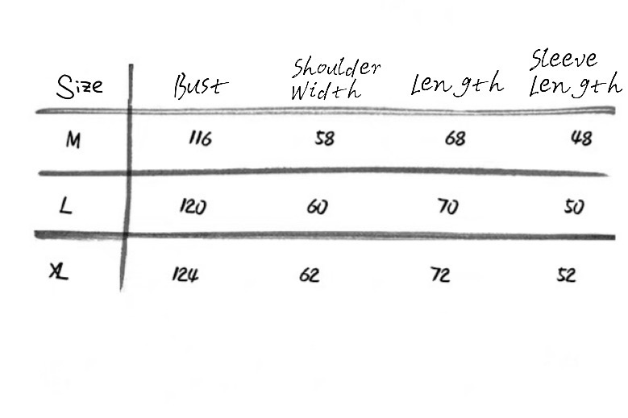

Vintage Vibe Sweater

Size Chart
Step back in time with the Vintage Vibe Sweater. This sweater combines retro-inspired patterns with modern comfort, making it a versatile piece for any occasion. The muted colors and classic knit design offer a timeless appeal that never goes out of style.
Description
Embrace nostalgia with the Vintage Vibe Retro Knit Sweater. This sweater combines retro-inspired stripes with a rich, textured wool blend. The soft, brushed yarn gives it a warm, cushioned feel, perfect for layering in cooler weather. The ribbed neckline, cuffs, and hem create a snug, fitted silhouette, while the sweater's rich texture gives it a timeless charm.
Back to Products